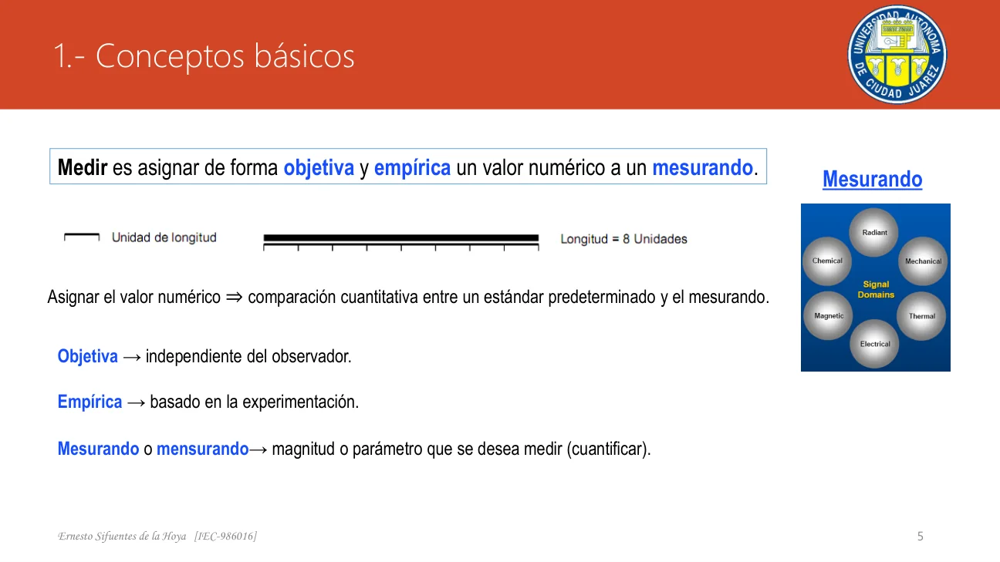
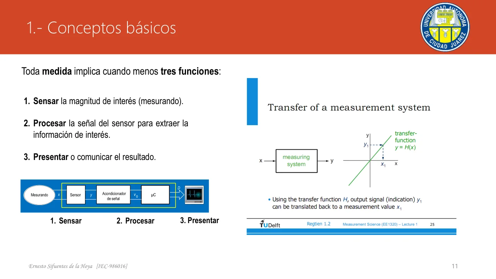
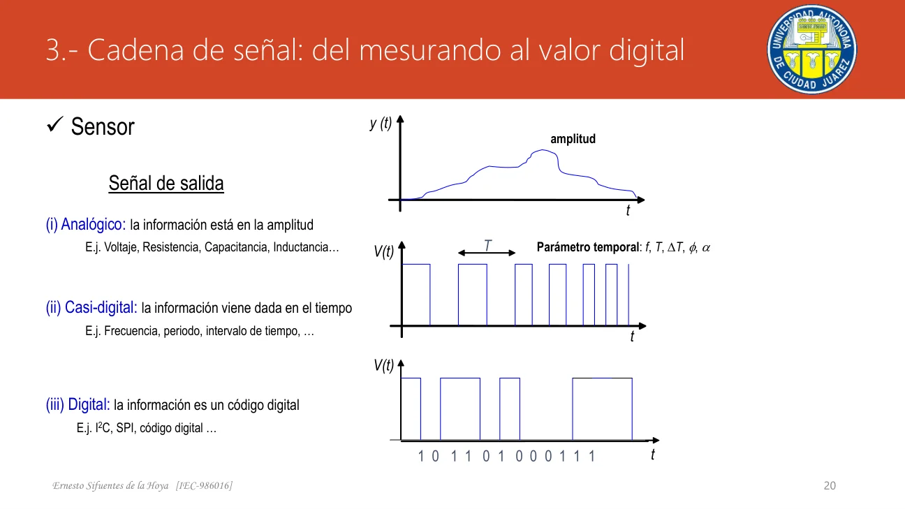
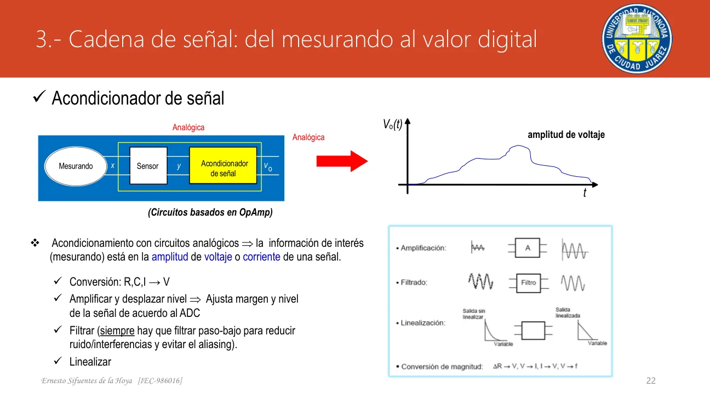
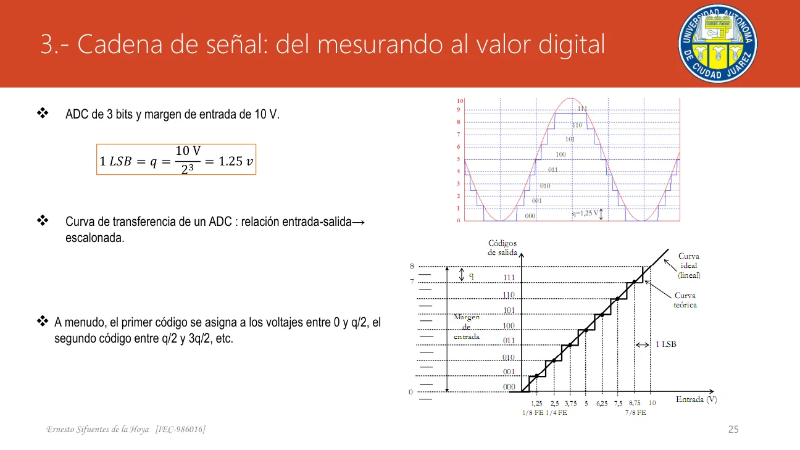
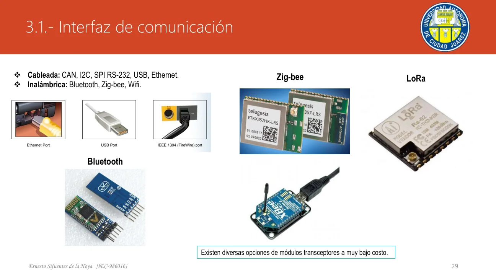
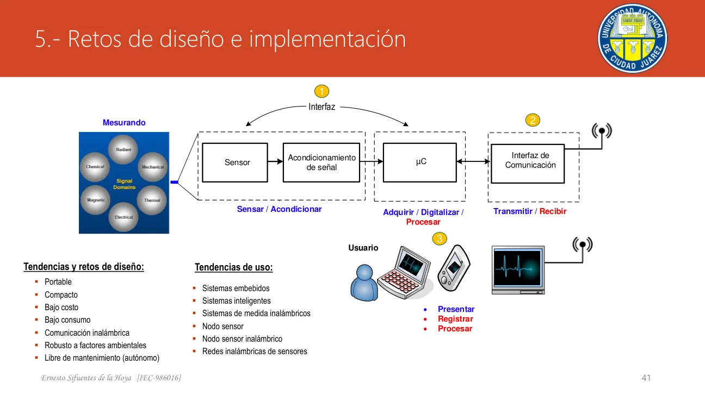
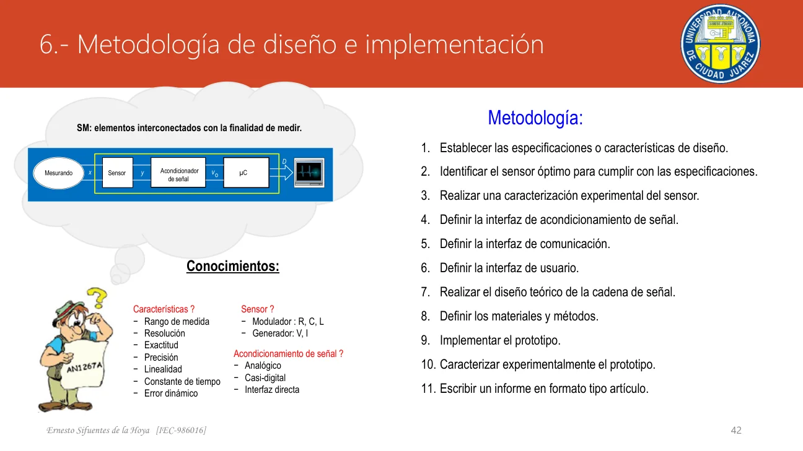
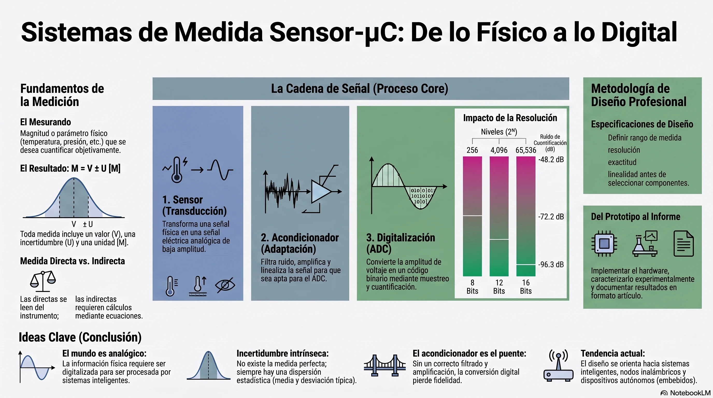

Introducción a los sistemas electrónicos
de medida sensor–μC
De la magnitud física al resultado digital. Fundamentos de medición, sensores, acondicionamiento, conversión analógico-digital y diseño de sistemas electrónicos de medida.
Plan de la semana
Actividades presenciales y trabajo independienteEncuadre del curso
Presentación de objetivos, contenidos, metodología, evaluación y bibliografía. Revisión de componentes e integración de equipos de laboratorio.
Revisar objetivos y criterios oficiales en la página principal del curso.
Ver criterios de evaluaciónLección 1 · Sistemas de medida
Conceptos de medición, arquitectura sensor–μC, cadena de señal, ADC, ejemplos de aplicación y metodología de diseño. Actividades guiadas y discusión.
Actividad extra clase: cuestionario colaborativo, entrega en la segunda clase de la Semana 2.
Iniciar lecciónDefinir mensurando, medición directa e indirecta, incertidumbre y unidad.
Identificar sensor, acondicionador, convertidor A/D, microcontrolador y comunicación.
Estadísticos de mediciones repetidas y resolución ideal de un ADC, con unidades.
Lección 1 · Fundamentos
Explore los conceptos y sus representaciones¿Qué es medir?
Medir es asignar de manera objetiva y empírica un valor numérico a un mensurando mediante comparación cuantitativa con una referencia.
El mensurando es la magnitud de interés (temperatura, voltaje, fuerza, iluminación, etc.). El resultado debe indicar valor, unidad e información sobre la incertidumbre.
En los retos de esta semana se utiliza U = k·s como intervalo descriptivo de dispersión; más adelante se distinguen la dispersión y la incertidumbre de la media.

1. ¿Para qué medimos? Medición directa e indirecta
La medición permite obtener conocimiento sobre un fenómeno, validar un diseño, monitorizar procesos y cerrar lazo de control. Una medición directa se lee en un instrumento; una indirecta se obtiene por un modelo a partir de otras magnitudes medidas.
Voltaje de una batería leído con un multímetro.
Potencia eléctrica estimada por el producto del voltaje y la corriente medidos.
Las tres funciones fundamentales de un sistema de medida son sensar, procesar y presentar/comunicar la información.

2. Señales, sensores y acondicionamiento
Información en amplitud de voltaje, resistencia, capacitancia o inductancia.
Información en un parámetro temporal: frecuencia, período o intervalo de tiempo.
Información codificada, por ejemplo con interfaces I²C o SPI.
El acondicionamiento de señal adapta la salida del sensor: puede amplificar, desplazar nivel, filtrar, linealizar o transformar dominios. Para señales muestreadas, el filtrado antialiasing reduce componentes que producirían aliasing.


3. Conversión analógico–digital
El convertidor A/D representa una señal analógica mediante códigos discretos. Se estudian muestreo, cuantificación y codificación. La resolución ideal depende del margen de entrada y del número de bits.
Un ADC ideal unipolar de N bits ofrece códigos. Su resolución en voltios es q. Explore después el laboratorio de ADC para observar el escalonamiento.

4. Microcontrolador, comunicaciones y alimentación
Un microcontrolador integra CPU, memoria y periféricos para adquirir, procesar y comunicar señales. Entre las opciones del curso se utiliza el ESP32. Una interfaz cableada puede usar USB, I²C, SPI, CAN o Ethernet; la comunicación inalámbrica puede emplear Wi‑Fi, Bluetooth o redes especializadas.
La fuente de alimentación influye en el consumo, la autonomía, la estabilidad de voltaje y la confiabilidad del nodo sensor.

5. Retos y metodología de diseño
El diseño debe establecer primero especificaciones: rango de medida, resolución, exactitud, precisión, linealidad y respuesta temporal. A partir de estas se selecciona el sensor, su interfaz, el sistema de adquisición y la comunicación, antes de construir y validar el prototipo.


La cadena de medida
Seleccione un bloque para comprender su función
Laboratorio interactivo · ADC ideal
Explore el efecto del número de bits y el voltaje de referenciaEn la presentación original, la numeración comienza en 1; el resultado D₁ coincide con esa convención. En programación de microcontroladores suele utilizarse D₀, con códigos de 0 a 2ᴺ−1. La gráfica usa resolución visual limitada cuando hay más niveles que píxeles. El ADC aquí es un modelo ideal, no representa la no linealidad real del ADC del ESP32.
Práctica interactiva · ¿Cuánto mide realmente?
Registro, análisis y exportación de medicionesMedición directa: dimensión de una mesa
Resultados del experimento
Relaciones matemáticas del análisis de mediciones
Con n lecturas, la media y la desviación típica muestral se calculan como:
Para el Reto 2 se calcula tᵣ a partir de cada distancia d expresada en metros; la media de los tiempos individuales no es, en general, igual a evaluar la función en la distancia media.
Descargar análisis en PythonEvaluación del aprendizaje
Autoevaluación formativa y cuestionario de la lecciónAutoevaluación interactiva
Seleccione las respuestas y revise la retroalimentación. Esta actividad no sustituye la evaluación oficial.
Cuestionario L1
El cuestionario contiene las 25 preguntas de la guía original. Puede responderlas aquí, guardarlas en su navegador y descargar un archivo con sus respuestas.
Entrega: segunda clase de la Semana 2, según la planificación entregada.
0 / 25 respondidas
Tutor de aprendizaje con IA
Orientación socrática sobre la Lección 1Formule su pregunta
La consulta generativa directa requiere iniciar el servidor opcional con clave de API. Sin él, puede copiar la consulta y utilizar su asistente de IA habitual.
Orientación del tutor
Reglas académicas: declare el uso de IA cuando corresponda; no envíe datos personales ni resultados identificables de otros estudiantes. Las mediciones que presente deben corresponder a experimentos efectivamente realizados.
Materiales y preparación
Documentos originales y herramientas del cursoMaterial didáctico
Preparación para el laboratorio
Revise los componentes electrónicos del curso e instale las herramientas indicadas.